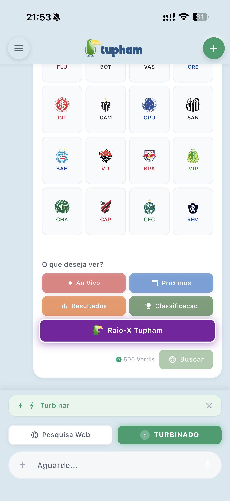
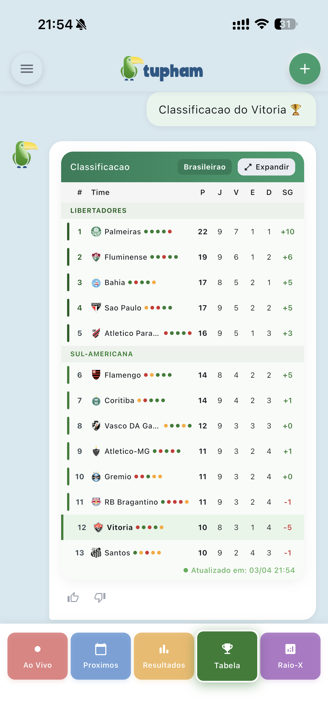

Seu time ao vivo,
lance a lance.
Acompanhe o futebol direto no chat: placar, gols, cartões e estatísticas em tempo real, com notificação de gol no bolso. E o melhor — é leve e roda em qualquer celular, sem precisar de IA pesada.

O jogo inteiro,
dentro do chat.
Placar, minuto, gols, cartões, posse de bola, chutes e escanteios atualizando ao vivo no card do chat. Ligue o toggle "Acompanhar ao vivo" e o Tupham gera uma mini-narração estilo rádio, com cada lance contado em tempo real.
- Notificação push de gol — e também de cartão vermelho, início, intervalo, segundo tempo e fim de jogo.
- Chega mesmo com o app fechado: o aviso pinga no seu celular pelo sistema de notificações.
- Estatísticas completas: posse, chutes a gol, escanteios e cartões, tudo no mesmo card.

Os 40 times do
Brasileirão. O seu, na hora.
Todos os 20 times da Série A e os 20 da Série B numa grade de escudos. Busca pelo apelido — Mengão, Verdão, Timão — e o Tupham acha na hora. Escolheu o time, abre cinco modos:
- Ao Vivo — o jogo de agora, lance a lance.
- Próximos — a agenda dos jogos que vêm aí.
- Resultados — os últimos placares do time.
- Classificação — a tabela da divisão dele.
- Raio-X Tupham — a temporada do time em números.
A tabela inteira,
com as zonas no lugar.
Série A e Série B com as zonas coloridas: Libertadores, Sul-Americana e rebaixamento, cada faixa no seu tom. Pontos, jogos, vitórias, empates, derrotas e saldo de gols — a leitura completa da rodada.
- Zonas coloridas pra bater o olho e entender quem sobe, quem se classifica e quem corre risco.
- V / E / D, pontos e saldo de cada time, atualizados a cada rodada.
- Libertadores, Copa do Brasil e estaduais aparecem cruzados — puxados automaticamente pelo seu time, sem você precisar procurar.

Os números do time —
e a vibe da torcida.
Tudo leve, rodando 100% sem IA local. Funciona em qualquer aparelho, sem pesar no seu celular.
Raio-X Tupham
As estatísticas da temporada do time num lugar só: gols por período do jogo, aproveitamento em casa e fora, cartões e as sequências (invencibilidade, jejum, vitórias seguidas). A leitura de quem o time é nesse campeonato.
Palpite da Torcida
Votação ao vivo durante a partida: casa, empate ou fora. Você palpita, vê o que a galera está achando em tempo real e acompanha o termômetro da torcida mudar a cada lance do jogo.
O bolão da Copa,
com a sua turma.
A tradição do bolão vira app. Crie bolões privados pra família e amigos, ou entre nos bolões oficiais do Tupham — de graça. Tudo no celular, sem papel, sem planilha bagunçada.
10 formatos de palpite
Placar exato, vencedor do jogo, top 3 da Copa, artilheiro, mais/menos de 2.5 gols, mais cartões, quem passa de cada grupo, bracket do mata-mata e mais. Bolão do jeitão da sua turma.
Convide pelo WhatsApp
Chame a galera com um código de 6 caracteres ou um link direto no WhatsApp. Quem recebe entra com um toque — sem cadastro chato no meio do caminho.
Ranking ao vivo
A classificação do bolão atualiza em menos de 30s a cada jogo. Bracket interativo do mata-mata pra acompanhar quem avança — e quem caiu de produção.
Trava automática justa
Cada palpite fecha sozinho no horário certo do jogo. Ninguém chuta depois do apito, ninguém leva vantagem — a regra é a mesma pra todo mundo.
Apuração automática
O Tupham apura os pontos e define a premiação sozinho, jogo a jogo. Nada de discussão sobre quem ganhou: a pontuação é transparente pra galera toda.
Prêmio em Verdis
A premiação é em Verdis, a moeda verde do app. O Tupham nunca toca em dinheiro de verdade — é a competição com a turma, do jeito leve e do bem.
Escolha ou crie um bolão
Entre num bolão oficial do Tupham ou monte o seu, privado, com o formato que a turma curte.
Convide a turma
Mande o link ou o código de 6 caracteres no WhatsApp. Todo mundo entra com um toque.
Faça seus palpites
Cravar antes do lock. Cada palpite fecha sozinho no horário certo do jogo, justo pra todo mundo.
Acompanhe ao vivo
Veja o ranking subir em tempo real e a premiação automática em Verdis cair na conta da galera.
A Copa do Mundo 2026 chega como destaque do app. Enquanto o torneio não rola, monte sua turma e deixe o bolão pronto.
Baixe e
chama a galera.
Seu time ao vivo, a classificação na mão e o bolão da Copa com a turma. Comece grátis hoje.